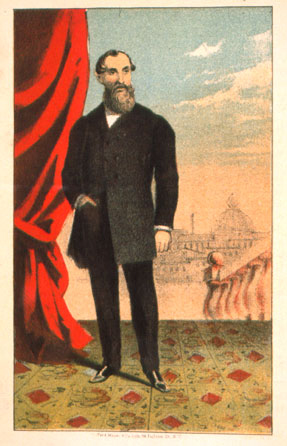
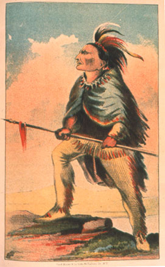
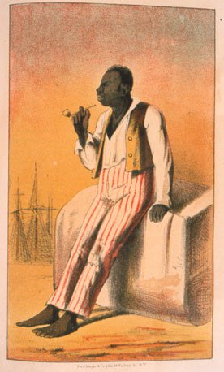

Southern Rhetoric From Planter Aristocracy During Reconstruction
Source: John H. Van Evrie,
White Supremacy and Negro Subordination; or Negroes a Subordinate Race, and (so-called) Slavery its Normal Condition
New York: Van Evrie, Horton & Co., 1868 [Newberry Library Call #: H 57 .936]
Images In Order of Appearance From Left to Right



back